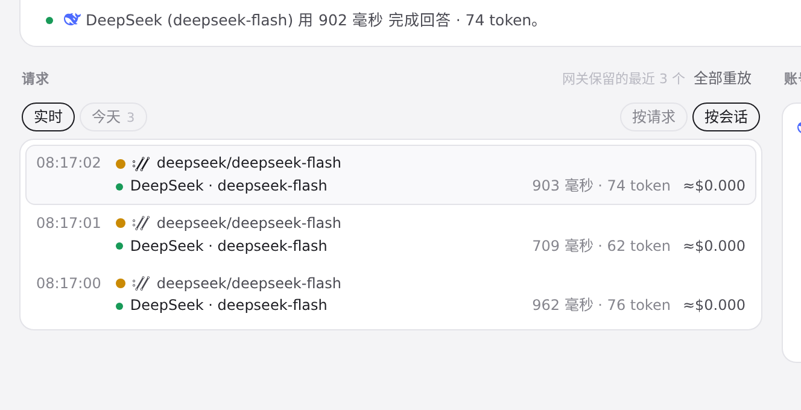

#768 界面预览
commit af9b0c8 · 回到 PR · 路由页：Codex 的隐藏标题请求现在会自动并回原会话的分组（请求数、token、费用合并显示），会话名轮询时一并取回推断出的父子关系，并在带推断关联的组名提示里加了一行说明。
红线是鼠标走过的轨迹，红色圆环是一次点击；底部文字是这一步在做什么。空格暂停，← → 逐段查看。
路由页的按会话分组（自动标题关联出现的地方） · 路由页，当前按请求列出最近 3 个请求

路由页的按会话分组（自动标题关联出现的地方） · 按会话分组后的请求列表：标题请求自动关联后就会并进原会话组，组名提示里也多一行说明